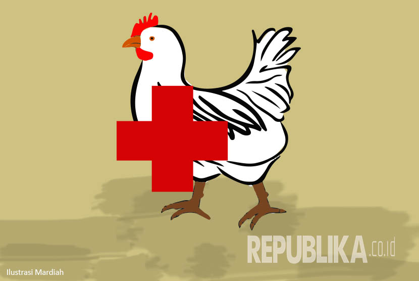
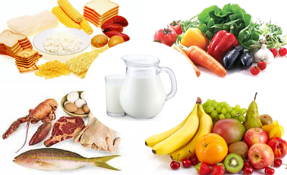

H5N1
Flu burung adalah infeksi virus yang menyerang bukan hanya burung, tetapi juga manusia, dan hewan lain. Namun sebagian besar adalah unggas. H5N1 adalah bentuk paling umum dari flu burung.
Pasien yang telah terbukti menderita flu burung akan dirawat di ruang isolasi di rumah sakit untuk menghindari penularan. Pasien dianjurkan untuk minum banyak cairan, mengkonsumsi makanan sehat, istirahat, dan minum obat pereda rasa sakit, dokter juga biasanya akan memberikan obat-obatan antivirus agar penyakit tidak berkembang makin parah. Contoh obat-obatan antivirus yang bisa diberikan dalam kasus flu burung adalah oseltamivir dan zanamivir.
1. Jika positif Flu burung
2. Harus isolasi
3. Harus minum banyak cairan
4. Harus makan makanan sehat
5. Harus istirahat
6. Minum obat-obatan